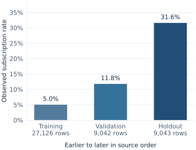
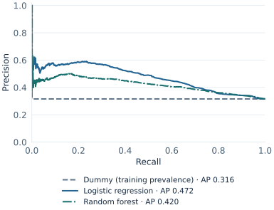
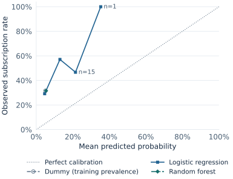
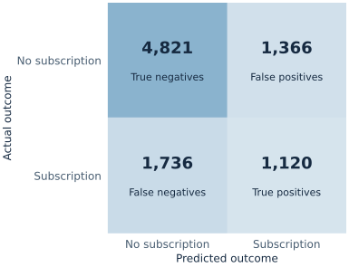
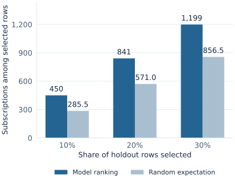

01. The business question
A campaign manager with limited call capacity must decide which eligible contacts to prioritize. The model estimates the likelihood of a term-deposit subscription, recorded as y, using information available before the call.
The main ranking metric is average precision, which summarizes the precision–recall curve and accounts for the scarcity of positive outcomes in the earlier campaigns. At the contact budget, precision estimates how many selected records converted and recall shows how many observed subscriptions those records cover.
02. Data and chronological split
The original bank-full.csv contains 45,211 contact records from historical phone campaigns at a Portuguese bank. There were 5,289 recorded subscriptions, or 11.70% of the dataset.
Validation found zero blank cells and zero exact duplicate records. The source uses explicit unknown categories and marks 36,954 records with no prior contact.
The file is ordered by date. I used its first 60% for training, the next 20% for validation, and the final 20% as the holdout. Individual row timestamps and customer IDs are unavailable. The row-order split approximates a forward test, with a possibility that a customer appears in more than one split.
- Training · 27,126 rows
- 5.04%
- Validation · 9,042 rows
- 11.79%
- Holdout · 9,043 rows
- 31.58%

S. Moro, P. Rita, and P. Cortez (2014). Accessed November 18, 2026. UCI Bank Marketing · DOI 10.24432/C5K306 · CC BY 4.0
03. Modeling workflow
- Validate fields
- Audit availability
- Split by row order
- Train and compare
- Evaluate the policy
Feature availability
Inputs include job, education, credit default, balance, housing and personal loan indicators, days since prior contact, prior contact count, and previous campaign outcome. The prior-contact feature separates the pdays = -1 sentinel into a contact indicator and a missing prior-contact interval. The categorical value unknown is kept as recorded.
The current campaign’s duration is only known once the call has happened. The current campaign contact count includes that call, and contact type, day, and month describe the last contact. I excluded those five fields along with age and marital status.
Comparison and decision policy
I compared a dummy baseline, logistic regression, and a tree ensemble. The preprocessing pipeline fits its encoders, imputers, and scaling using training rows. Validation guides model selection and sets a probability cutoff for a 20% contact budget. The cutoff stays fixed on the chronological holdout.
A separate capacity analysis ranks holdout scores and evaluates the top 10%, 20%, and 30% of records. Each scenario uses the expected performance of an equally sized random selection as a benchmark.
04. Holdout evaluation
The validation-selected random forest achieved holdout average precision of 0.420 versus 0.316 for the prior-only baseline. At a fixed 20% holdout call budget, its ranking identified 841 recorded subscriptions versus about 571 expected from random selection.
Model comparison
Validation average precision selected random forest. Logistic regression ranked better on the later holdout. The outreach analysis keeps the original validation choice so the holdout stays a test of that decision.
| Model | Validation AP | Holdout AP | Holdout ROC-AUC | Holdout Brier |
|---|---|---|---|---|
| Prior-only dummy | 0.118 | 0.316 | 0.500 | 0.287 |
| Logistic regression | 0.180 | 0.472 | 0.662 | 0.278 |
| Random forest (selected) | 0.190 | 0.420 | 0.631 | 0.282 |

Probability calibration
The forest’s mean predicted probability was 5.34% on the holdout, where the recorded subscription rate was 31.58%. That gap limits the use of its scores as absolute probabilities. At the common 0.50 comparison cutoff, all three models selected zero rows and had zero recall and F1. Precision is undefined with zero selections.

Frozen cutoff and actual contact volume
The strict cutoff of score > 0.061447 (rounded) selected 1,808 validation records (20.00%). It selected 2,486 later records (27.49%), above the 20% budget. The selection included 1,120 subscriptions, with 1,366 non-subscribers selected and 1,736 subscribers missed.
- Precision
- 45.05%
- Recall
- 39.22%
- F1 score
- 0.419

Ranked outreach at a fixed capacity
| Budget | Selected | Observed subscriptions | Expected random | Precision | Recall |
|---|---|---|---|---|---|
| 10% | 904 | 450 | 286 | 49.78% | 15.76% |
| 20% | 1,808 | 841 | 571 | 46.52% | 29.45% |
| 30% | 2,712 | 1,199 | 857 | 44.21% | 41.98% |

05. Recommendations and limits
For a 20% capacity pilot, rank eligible records and cap the contact list at that budget. The retrospective 20% list captured 29.45% of recorded holdout subscriptions. A frozen score cutoff exceeded the same budget in the later cohort, so track how both call volume and score distributions change.
Before expanding outreach, compare logistic regression and random forest on a newer chronological cohort. Check the calibration and budget on that cohort, then run a randomized pilot that measures incremental subscriptions, contact costs, and opt-outs.
The data covers one historical banking institution and records clients who were already contacted. It supports ranking those observed outcomes. Estimating the incremental effect of calling would require an appropriate comparison group, such as a randomized pilot.
Job, education and financial indicators can carry disparities even with age and marital status excluded. Any pilot should check selection rates and errors by relevant groups where lawful and feasible, and use the score only for contact prioritization.
06. Reproduce the study
The pipeline downloads the public UCI archive, validates the input, trains the models, and writes aggregate metrics and figures locally. The project includes its dependency versions, data dictionary, and tests.
cd projects/bank-marketing
python -m pip install -r requirements.txt
python -m src.run